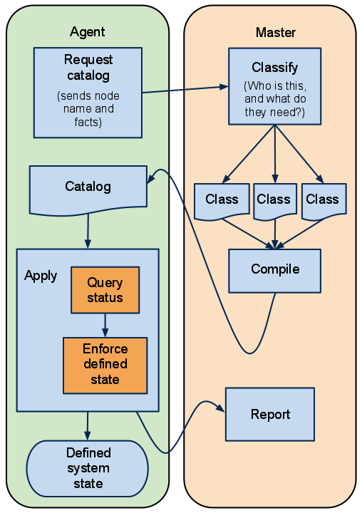

Basic Agent/Master Puppet
This guide assumes that you’ve followed the previous walkthrough, and have a fresh agent VM that can reach your original master VM over the network. Both VMs should be running right now, and you’ll need to be logged in to both of them as root.
← Preparing an Agent VM — Index — TBA →
Introduction
How Do Agents Get Configurations?
Puppet’s agent/master mode is pull-based. Usually, agents are configured to periodically fetch a catalog and apply it, and the master controls what goes into that catalog. (For the next few exercises, though, you’ll be triggering runs manually.)
What Do Agents Do, and What Do Masters Do?
Earlier, you saw this diagram of how Puppet compiles and applies a manifest:

Running Puppet in agent/master mode works much the same way — the main difference is that it moves the manifests and compilation to the puppet master server. Agents don’t have to have see any manifest files at all, and have no access to configuration information that isn’t in their own catalog.

The Agent Subcommand
The puppet agent subcommand fetches configurations from a master server. It has two main modes:
- Daemonize and fetch configurations every half-hour (default)
- Run once and quit
We’ll be using the second mode, since it gives a better view of what’s going on. To keep the agent from daemonizing, you should use the --test option, which also prints detailed descriptions of what the agent is doing.
If you accidentally run the agent without --test, it will daemonize and run in the background. To check whether the agent is running in the background, run:
# /etc/init.d/pe-puppet status
To turn it off, run:
# /etc/init.d/pe-puppet stop
Saying Hi
Time to start! On your agent VM, start puppet agent for the first time:
[root@agent1 ~]# puppet agent --test
info: Creating a new SSL key for agent1.localdomain
warning: peer certificate won't be verified in this SSL session
info: Caching certificate for ca
warning: peer certificate won't be verified in this SSL session
warning: peer certificate won't be verified in this SSL session
info: Creating a new SSL certificate request for agent1.localdomain
info: Certificate Request fingerprint (md5): FD:E7:41:C9:2C:B7:5C:27:11:0C:8F:9C:1D:F6:F9:46
warning: peer certificate won't be verified in this SSL session
warning: peer certificate won't be verified in this SSL session
warning: peer certificate won't be verified in this SSL session
Exiting; no certificate found and waitforcert is disabled
Hmm.
What Happened?
Puppet agent found the puppet master, but it got stopped at the certificate roadblock. It isn’t authorized to fetch configurations, so the master is turning it away.
Troubleshooting
It’s possible you didn’t see the response printed above, and there are a number of possible culprits. Read back over the instructions for creating your agent VM and make sure you didn’t miss anything; in particular, check that:
- The VMs can ping each other
- The agent can resolve the puppet master by host name
- The agent’s
/etc/puppetlabs/puppet/puppet.conffile has aserversetting (in the[agent]block) ofpuppetorlearn.localdomain - The VMs’ clocks are in sync
Signing the Certificate
So we’ll authorize it! On your puppet master VM, check the list of outstanding certificate requests with puppet cert list. (More about this command later.)
[root@learn ~]# puppet cert list
agent1.localdomain (FD:E7:41:C9:2C:B7:5C:27:11:0C:8F:9C:1D:F6:F9:46)
There’s our agent node. And the request fingerprint matches, too. You know this node is okay, so go ahead and sign its certificate with puppet cert sign:
[root@learn ~]# puppet cert sign agent1.localdomain
notice: Signed certificate request for agent1.localdomain
notice: Removing file Puppet::SSL::CertificateRequest agent1.localdomain at '/etc/puppetlabs/puppet/ssl/ca/requests/agent1.localdomain.pem'
Now that it’s authorized, go back to the agent VM and run puppet agent again:
[root@agent1 ~]# puppet agent --test
warning: peer certificate won't be verified in this SSL session
info: Caching certificate for agent1.localdomain
info: Retrieving plugin
info: Caching certificate_revocation_list for ca
info: Loading facts in facter_dot_d
info: Loading facts in facter_dot_d
info: Loading facts in facter_dot_d
info: Loading facts in facter_dot_d
info: Caching catalog for agent1.localdomain
info: Applying configuration version '1326210629'
notice: Finished catalog run in 0.11 seconds
It worked! That was a successful Puppet run, although it didn’t do much yet.
What Happened?
Puppet uses SSL certificates to protect communications between agents and the master. Since agents can’t do a full run without a certificate, our agent had to ask for one and then wait for the request to get approved.
We’ll cover SSL in more detail later.
Serving a Real Configuration
So how can we make the agent do something interesting? Well, we already built some useful classes, and they’re all available on the puppet master, so we’ll use them. (If you haven’t already copied the modules from your old VM into your puppet master’s /etc/puppetlabs/puppet/modules directory, do so now.)
But how do we choose which classes go into an agent’s catalog?
Site.pp
When we were using puppet apply, we would usually specify a manifest file, which declared all of the classes or resources we wanted to apply.
The puppet master works the same way, except that it always loads the same manifest file, which we usually refer to as site.pp. With Puppet Enterprise, it’s located by default at /etc/puppetlabs/puppet/manifests/site.pp, but you can configure its location with the manifest setting.
You could declare classes and resources directly in site.pp, but that would make every node get the same resources in its catalog, which is of limited use. Instead, we’ll hide the classes we want to declare in a node definition.
Node Definitions
Node definitions work almost exactly like class definitions:
# Append this at the bottom of /etc/puppetlabs/puppet/manifests/site.pp
node 'agent1.localdomain' {
# Note the quotes around the name! Node names can have characters that
# aren't legal for class names, so you can't always use bare, unquoted
# strings like we do with classes.
# Any resource or class declaration can go inside here. For now:
include apache
class {'ntp':
enable => false,
ensure => stopped,
}
}
But unlike classes, nodes are declared automatically, based on the name of the node whose catalog is being compiled. Only one node definition will get added to a given catalog, and any other node definitions are effectively hidden.
An agent node’s name is almost always read from its certname setting, which is set at install time but can be changed later. The certname is usually (but not always) the node’s fully qualified domain name.
More on node definitions later, as well as alternate ways to assign classes to a node.
Pulling the New Configuration
Now that you’ve saved site.pp with a node definition that matches the agent VM’s name, go back to that VM and run puppet agent again:
[root@agent1 ~]# puppet agent --test
info: Retrieving plugin
info: Loading facts in facter_dot_d
info: Loading facts in facter_dot_d
info: Loading facts in facter_dot_d
info: Loading facts in facter_dot_d
info: Caching catalog for agent1.localdomain
info: Applying configuration version '1326416535'
notice: /Stage[main]/Ntp/Package[ntp]/ensure: created
--- /etc/ntp.conf 2011-11-18 13:21:25.000000000 +0000
+++ /tmp/puppet-file20120113-5967-56l9xy-0 2012-01-13 01:02:23.000000000 +0000
@@ -14,6 +14,8 @@
# Use public servers from the pool.ntp.org project.
# Please consider joining the pool (http://www.pool.ntp.org/join.html).
+
+# Managed by puppet class { "ntp": servers => [ ... ] }
server 0.centos.pool.ntp.org
server 1.centos.pool.ntp.org
server 2.centos.pool.ntp.org
info: /Stage[main]/Ntp/File[ntp.conf]: Filebucketed /etc/ntp.conf to main with sum 5baec8bdbf90f877a05f88ba99e63685
notice: /Stage[main]/Ntp/File[ntp.conf]/content: content changed '{md5}5baec8bdbf90f877a05f88ba99e63685' to '{md5}35ea00fd40740faf3fd6d1708db6ad65'
notice: /Stage[main]/Apache/Package[apache]/ensure: created
notice: /Stage[main]/Apache/Service[apache]/ensure: ensure changed 'stopped' to 'running'
info: ntp.conf: Scheduling refresh of Service[ntp]
notice: /Stage[main]/Ntp/Service[ntp]: Triggered 'refresh' from 1 events
notice: Finished catalog run in 32.74 seconds
Success! We’ve pulled a configuration that actually does something.
If you change this node’s definition in site.pp, it will fetch that new configuration on its next run (which, in a normal environment, would happen less than 30 minutes after you make the change).
Next
You now know how to:
- Run puppet agent interactively with
--test - Authorize a new agent node to pull configurations from the puppet master
- Use node definitions in site.pp to choose which classes go into a given node’s catalog
But in the process of getting there, we glossed over some details. Next, we’ll talk more about certificates and node classification.